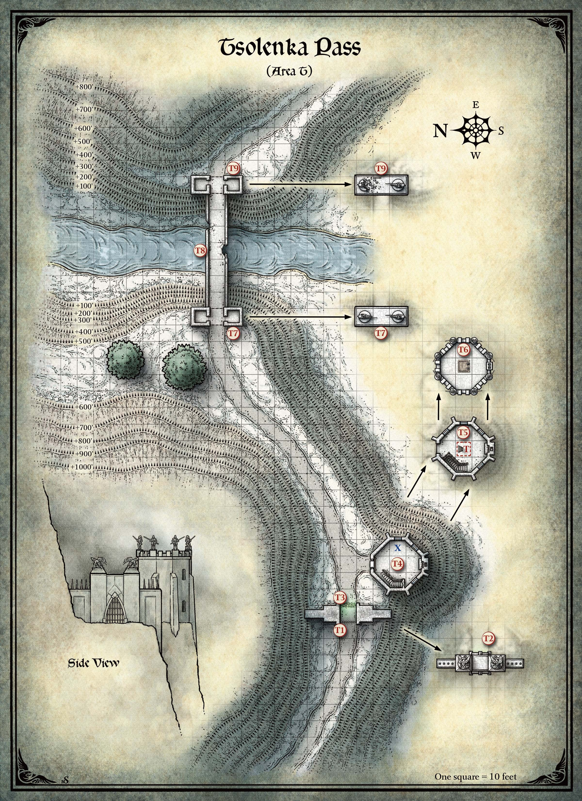

촐렌카 고개(Tsolenka Pass)는 가키스 산(Mount Ghakis)을 따라 붙은 자갈길로, 엄청난 높이까지 올라간다. 이 길은 까마귀 강 교차로(Raven River crossroads, 제2장, 구역 R)에서 시작하여 7마일을 달려 성문(구역 T1–T3)과 경비탑(구역 T4–T6), 그리고 루나 강(Luna River)을 가로지르는 석교(구역 T7–T9)에 이른다. 바람과 눈이 여정을 위험하게 만든다. 방한 대책 없이, 추운 날씨에 적합한 복장을 갖추지 않은 캐릭터는 밤에 극한 추위의 효과를 받는다 (던전 마스터 가이드 제5장 "모험 환경"의 "날씨" 참조).
길은 굽이치며 올라가, 가키스 산 이 자락으로 길게 사행했다. 공기는 따뜻해지기는커녕 점점 차가워졌고, 띄엄띄엄 보이던 눈이 점차 끊김 없이 이어졌다.
— 스트라드 폰 자로비치(Strahd von Zarovich),
《나, 스트라드: 뱀파이어의 회고록(I, Strahd: The Memoirs of a Vampire)》 中
아래 구역들은 촐렌카 고개 지도의 표시에 해당한다. 이 구조물들은 빈틈없이 맞춘 석재로 만들어져 있어, 마법이나 등반 도구 없이는 올라갈 수 없다.

캐릭터들이 서쪽에서 접근할 때, 다음을 읽어준다:
산길이 붙어 있는 바위 선반이 좁아진다. 왼쪽으로는 얼음 절벽이 어둡게 굴러가는 구름을 향해 가파르게 솟아 있다. 오른쪽으로는 땅이 안개 바다 속으로 떨어진다. 앞쪽으로, 바람과 눈 사이로 뾰족한 가시가 줄지어 있고 뿔 달린 머리의 악마 독수리 석상이 얹힌 검은 돌 높은 벽이 보인다. 벽 한가운데에는 닫힌 쇠창살이 박혀 있고, 그 뒤로 녹색 불꽃의 장막이 타오르고 있다.
어두운 벽 반대편, 산 가장자리를 움켜쥐듯, 강력한 전사들의 황금 석상이 얹힌 흰 돌의 경비탑이 서 있다.
성문은 30피트 높이이다. 이어진 벽은 20피트 높이이며 돌 가시로 줄지어 있다. 캐릭터들이 비행이나 등반으로 성문을 우회하면, 성문 위의 석상(구역 T2)이 움직여 공격한다.
캐릭터들이 쇠창살로부터 10피트 이내로 접근하면, 금속이 긁히는 소리를 내며 쇠창살이 저절로 올라간다. 1분간 열려 있다가 닫힌다.
이 석상들은 사실 석화된 두 마리의 브록(Vrock)이다. 공격을 받거나 캐릭터들이 성문을 우회하면, 브록들은 살로 되돌아와 공격하며, 도주하는 먹잇감을 추격하고 죽을 때까지 싸운다.
녹색 화염의 장막이 성문의 동쪽 아치를 채우고 있다. 턴에 처음 장막에 들어가거나 녹색 화염 안에서 턴을 시작하는 모든 크리처는 33(6d10)의 화염 피해를 받는다.
마법 해제(Dispel Magic)(DC 16)에 성공하면 장막이 1분간 억제된다. 장막은 반마법 영역(Antimagic Field) 안에서도 억제된다.
탑 문은 철띠를 두른 나무로 만들어져 있으며 안쪽에서 빗장이 걸려 있다. DC 22 근력(운동) 판정에 성공하면 문을 억지로 열 수 있다.
문 맞은편에 차가운 벽난로가 서 있고, 굴뚝으로 바람이 울부짖는다. 남쪽 벽에 돌 계단이 있다. 세 개의 창으로 안개 바다가 내려다보인다.
계단은 20피트 올라가 구역 T5에 이른다.
레이븐로프트 성(Castle Ravenloft) 구역 K78에서 이 장소로 텔레포트하는 캐릭터는 지도에 X로 표시된 지점에 도착한다.
탑의 위층은 거의 모든 벽에 창이 난 냉동실이다. 바닥과 천장에 볼트로 고정된 녹슨 철 사다리가 나무 다락문으로 이어진다. 돌 벽난로 위에는 다이어 울프(Dire Wolf)의 머리가 걸려 있다. 굴뚝으로 내려오는 바람이 그 대신 울부짖는다.
천장의 다락문을 밀면 삐걱 소리를 내며 열리고, 옥상(구역 T6)과 폭풍우 치는 잿빛 하늘이 드러난다.
10피트 높이의 금도금 석상들이 흉벽 위에 바깥을 향해 서 있다. 각각 창을 든 여성 인간 기사를 묘사하고 있다. 차가운 바람이 눈을 흩날리고, 그 아래로 녹슨 사슬갑옷을 입은 인간 해골들이 보인다.
옥상은 40피트 높이이며 아래 안개 낀 계곡까지 540피트이다. 바닥의 나무 다락문을 당기면 삐걱 소리를 내며 열리고, 아래 구역 T5가 드러난다.
해골들은 오래전 이 초소를 지키던 네 명의 경비병 유해이다. 유해를 수색하면 너덜해진 천 조각, 부러진 장궁과 화살, 녹슨 칼집 속 녹슨 칼날, 그리고 녹슨 사슬갑옷을 찾을 수 있다.
카드 점술이 이곳에 보물이 있다고 밝히면, 다음을 읽어준다:
소용돌이치는 눈이 날씬하고 젊은 여인들의 형상을 취한다. 바람이 울부짖는다, "꺼져라! 보물은 우리 것이다!"
이 형상들은 여섯 명의 눈 처녀(Snow Maiden)이다. 스펙터(Specter) 능력치를 사용하되, 다음과 같이 수정한다:
눈 처녀들은 말하지 않으며, 캐릭터들의 말에도 관심이 없다. 캐릭터들이 즉시 떠나지 않으면 공격한다. 마지막 눈 처녀가 쓰러지면, 캐릭터들이 찾는 보물이 옥상의 소용돌이치는 눈 속에 마법적으로 나타난다.
캐릭터들이 다리에 접근할 때, 다음을 읽어준다:
눈 덮인 고갯길이 석교가 가로지르는 협곡에 이른다. 다리 양쪽 끝에 30피트 높이, 30피트 너비의 석조 아치가 서 있다. 각 아치 꼭대기에는 창을 든 갑옷 입은 기사가 말을 타고 서로를 향해 돌격하는 석상 두 개가 있다. 바람이 협곡을 지나며 늑대처럼 물어뜯고 울부짖는다.
서쪽 아치에는 다리 양쪽에 빈 경비 초소가 하나씩 있다. 이 10피트 너비의 방들은 울부짖는 바람으로부터 어느 정도 보호를 제공한다.
석교를 감싸는 낮은 벽이 몇 군데 무너져 내렸지만, 다리 자체는 온전해 보인다. 검은 망토를 걸친 기수가 숯빛 말을 타고 다리 한가운데를 지키고 있다.
망토를 걸친 기수는 스트라드 폰 자로비치(Strahd von Zarovich)의 현현(顯現)으로, 더 이상 나아가지 말라는 음울한 경고이다. 캐릭터들이 어떤 식으로든 현현과 상호작용하면, 기수와 말은 바람 속의 재처럼 흩어진다.
다리 아래 500피트에 루나 강(Luna River)이 있으며, 안개 사이로 겨우 보인다. 몇 군데 미끄러운 곳이 있지만, 10피트 너비, 90피트 길이의 다리는 안전하게 건널 수 있다.
이 아치 위의 석상 하나가 무너져, 말의 뒷부분만 온전히 남아 있다. 산길은 그 너머로 계속된다.
이 아치에는 다리 양쪽에 10피트 정사각형 경비 초소가 있다. 두 방 모두 비어 있다.
이 아치 너머, 촐렌카 고개는 산허리를 따라 3마일을 달리다 북쪽과 남쪽으로 갈라진다. 북쪽 갈림길은 호박 사원(Amber Temple, 제13장)으로 이어진다. 남쪽 갈림길은 계속 가키스 산을 감아 돌다가 바로비아(Barovia)를 둘러싼 치명적인 안개에서 끝난다 (제2장, "레이븐로프트의 안개" 참조).
캐릭터들이 촐렌카 고개를 따라 이동하는 동안 다음 이벤트 중 하나 또는 모두를 사용할 수 있다.
캐릭터들이 석교(구역 T8)를 동쪽에서 서쪽으로 건널 때 — 아마도 호박 사원(제13장)에서 돌아오는 길에 — 수천 년간 산에서 살아남은 록(Roc)에게 발견된다. 록은 남동쪽 가키스 산 정상에 거대한 둥지를 가지고 있으며, 근처 호수의 물고기를 먹고 산다.
가키스 산의 록이 나타나면, 다음을 읽어준다:
다리를 향해 급강하하는 것은 비현실적인 크기의 생물 — 날개가 하늘을 가릴 만큼 거대한 새이다.
록은 다리 위의 무작위 크리처를 공격하며, 말이나 노새가 있으면 그것을 낚아챈다. 없으면 파티 구성원을 공격한다. 다리 양쪽 끝의 경비 초소에 숨은 캐릭터는 공격할 수 없다. 자기 턴에 공격할 대상이 없으면, 록은 끔찍한 비명을 지르고 둥지로 날아간다.
캐릭터들이 촐렌카 고개를 따라 이동하다가, 바로비아의 드루이드와 광전사들이 상고르(Sangzor, "피뿔(Bloodhorn)")라 부르는 야수와 마주친다:
앞의 길은 산허리를 깎아 만든 것으로, 한쪽은 가파르게 솟아 있고 다른 쪽은 떨어져 내린다. 안개와 눈이 시야를 크게 줄이고, 울부짖는 바람이 칼처럼 파고든다.
수동 지혜(지각) 점수가 16 이상인 캐릭터가 없으면 파티는 기습당한다. 있으면, 다음을 읽어준다:
9피트 높이의 염소가 당신 위의 바위 위에 서 있다. 회색 털이 산허리의 바위와 완벽하게 섞인다. 머리를 낮추자, 눈에 악의가 번뜩인다.
상고르는 초자연적 회복력과 사악한 기질로 알려진 거대 염소(Giant Goat)이다. 산악 민족이 수년간 사냥해 왔다. 능력치를 다음과 같이 수정한다:
거대 염소는 돌격 특성(Charge feature)을 사용하여 산비탈을 내리달려 캐릭터를 들이받는다. 공격이 명중하고 대상이 내성 굴림에 실패하면, 산비탈 아래로 굴러떨어져 100피트 아래 절벽 턱에 떨어진다.
염소는 10 이상의 피해를 입으면 도주한다. 안개와 강설 때문에 60피트 이상은 보이지 않는다. 염소가 시야에서 벗어나면, 바위 틈으로 사라진다.
상고르의 가죽을 걸친 캐릭터는 스트라드의 영지에 사는 광전사(Berserker)들의 경의를 받을 수 있다. 광전사들은 도발하지 않는 한 그 캐릭터나 그 동료들을 공격하지 않는다.
Curse of Strahd — Chapter 9: Tsolenka Pass
한국어 번역본